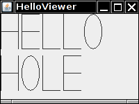

Here is a sample program output:

Use the following class as your main class:
import javax.swing.JFrame;
/**
This program shows the message "HELLO".
*/
public class HelloViewer
{
public static void main(String[] args)
{
JFrame frame = new JFrame();
final int FRAME_WIDTH = 200;
final int FRAME_HEIGHT = 150;
frame.setSize(FRAME_WIDTH, FRAME_HEIGHT);
frame.setTitle("HelloViewer");
frame.setDefaultCloseOperation(JFrame.EXIT_ON_CLOSE);
LettersComponent component = new LettersComponent();
frame.add(component);
frame.setVisible(true);
}
}
You need to supply the following class in your solution:
Letters
Use the following class in your solution:
import javax.swing.JComponent;
import java.awt.Graphics;
import java.awt.Graphics2D;
import java.awt.geom.Point2D;
public class LettersComponent extends JComponent
{
public void paintComponent(Graphics g)
{
final int LINE_SPACING = 10;
Graphics2D g2 = (Graphics2D) g;
double x = 0;
double y = 0;
Letters.drawH(g2, new Point2D.Double(x, y));
x = x + Letters.WIDTH;
Letters.drawE(g2, new Point2D.Double(x, y));
x = x + Letters.WIDTH;
Letters.drawL(g2, new Point2D.Double(x, y));
x = x + Letters.WIDTH;
Letters.drawL(g2, new Point2D.Double(x, y));
x = x + Letters.WIDTH;
Letters.drawO(g2, new Point2D.Double(x, y));
x = 0;
y = y + Letters.HEIGHT + LINE_SPACING;
Letters.drawH(g2, new Point2D.Double(x, y));
x = x + Letters.WIDTH;
Letters.drawO(g2, new Point2D.Double(x, y));
x = x + Letters.WIDTH;
Letters.drawL(g2, new Point2D.Double(x, y));
x = x + Letters.WIDTH;
Letters.drawE(g2, new Point2D.Double(x, y));
}
}